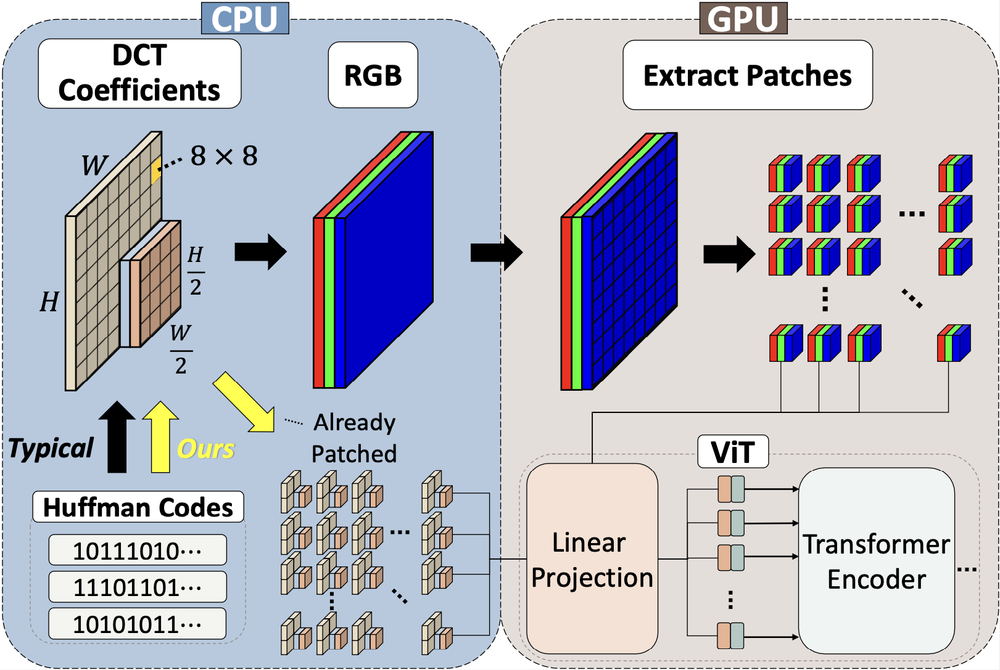

|
I am an incoming CSE PhD student in the University of Michigan, advised by Prof. Andrew Owens. I have a general interest in efficient computer vision, image processing, and machine learning. I will be graduating with a Master's degree in ECE from the University of Michigan, during which I was advised by Prof. Justin Johnson. I received a BS degree in Electrical Engineering from Sungkyunkwan University, where I worked with Prof. Jong Hwan Ko. Email / LinkedIn / Google Scholar / Twitter / Github |

|
|
I have been working on designing efficient computer vision system. My recent work, RGB no more focuses on training Vision Transformers directly from the encoded features of a JPEG image to accelerate the entire pipeline. In my previous work, Auto-Tiler, I aimed to design an efficient compression scheme during over-the-network model inference. |
|  |
Jeongsoo Park Justin Johnson CVPR, 2023 Project page (to be updated) arXiv We train ViTs directly from JPEG encoded features and accelerate train and eval by 39.2% and 17.9%. |
|
Jeongsoo Park Jungrae Kim Jong Hwan Ko Sensors, 2021 Paper We use autoencoders and show up to 67% and 81% reduced latency versus the image or video codec-based compression. |